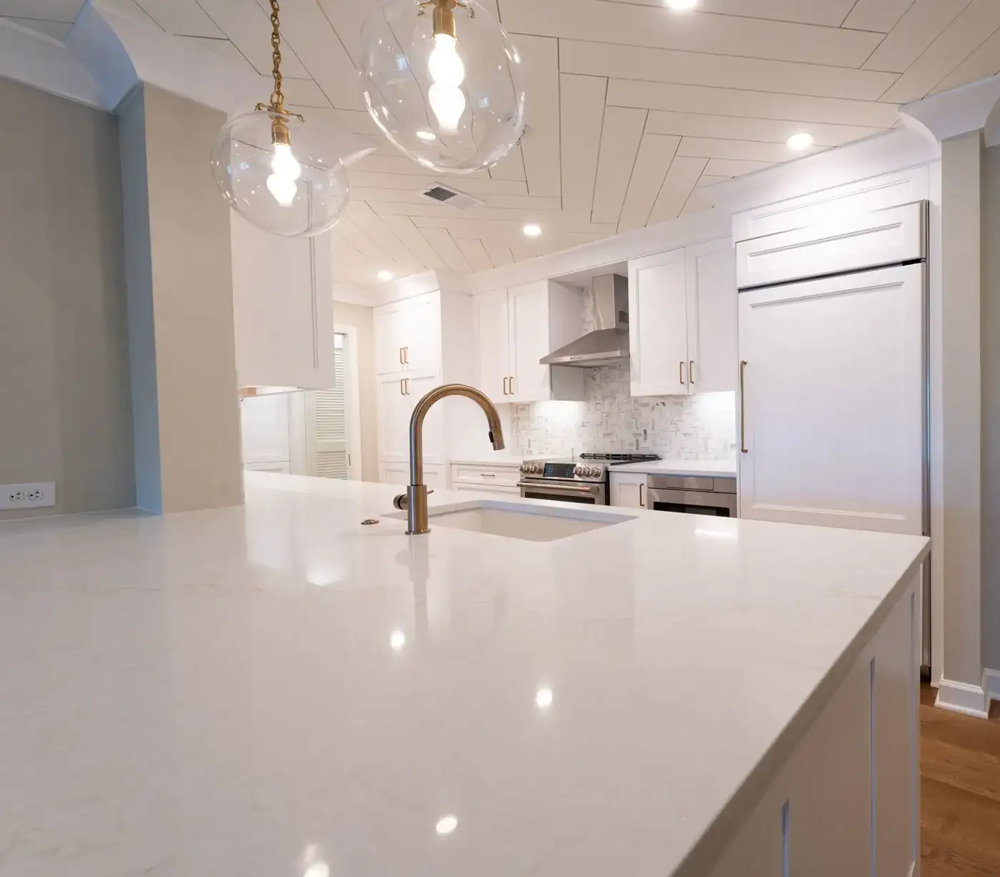
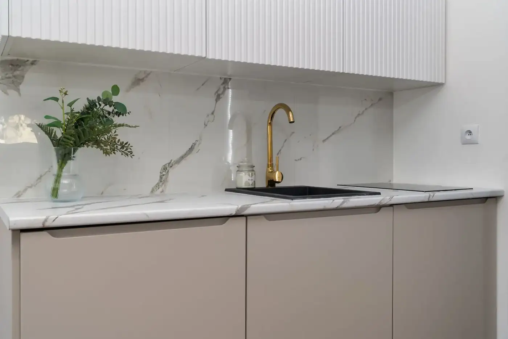
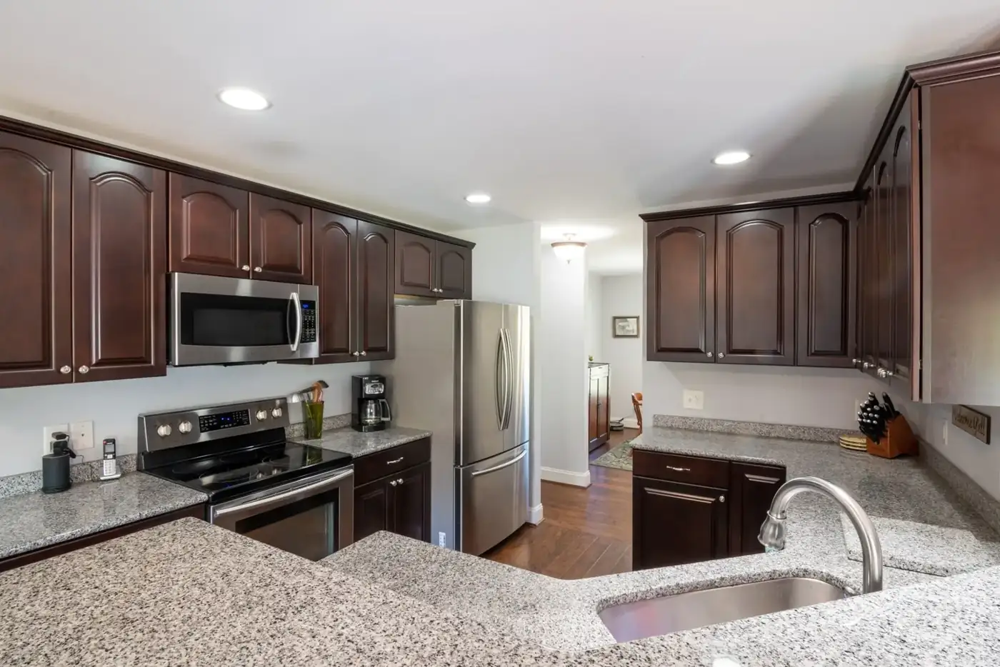
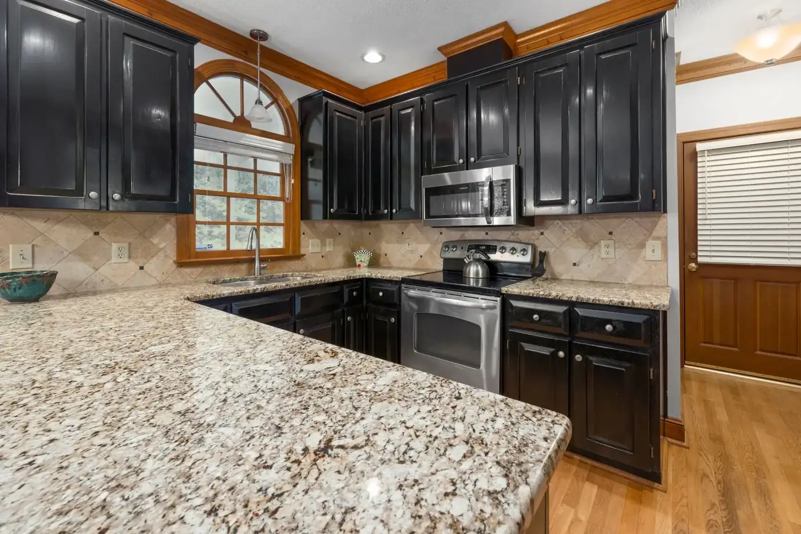
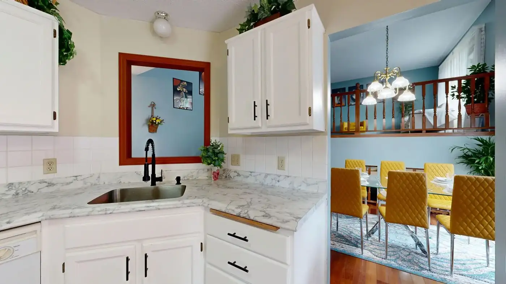

Countertops
Granite, quartz, marble and quartzite fabricated and installed.
De Leon Granite Countertops · Dallas–Fort Worth, TX
Countertops, Sinks, Backsplash — Dallas–Fort Worth, TX.
What we do
Granite, quartz, marble and quartzite fabricated and installed.
Sinks supplied and fitted.
Stone backsplashes to finish the kitchen.
A free in-home consultation to plan your project.
About
De Leon Granite Countertops is a family-owned and operated fabricator serving the Dallas–Fort Worth area and beyond, handling fabrication and installation with a diverse selection of quartz, marble, granite and quartzite, plus sinks and backsplashes.
Gallery
Sample imagery from Pexels standing in for De Leon Granite Countertops projects — to be replaced with real project photos.






Reviews
Service area
Enquire
Tell us about your project and we’ll get back to you.
What this preview improves